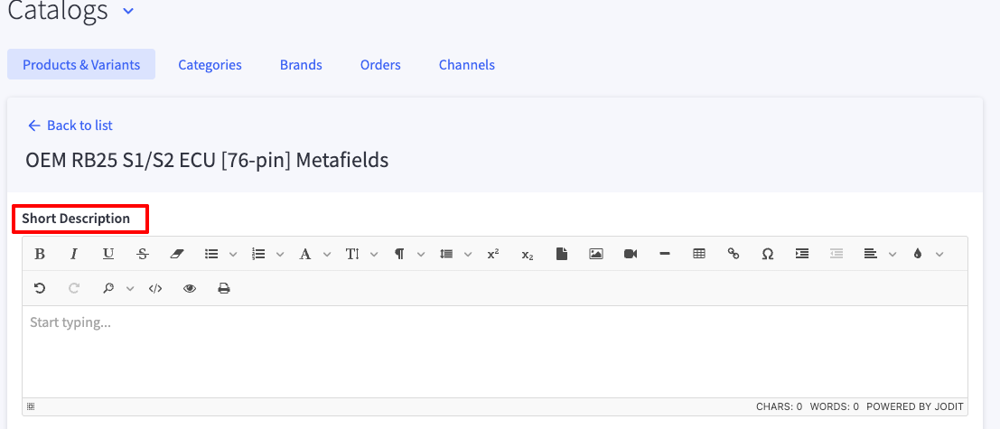
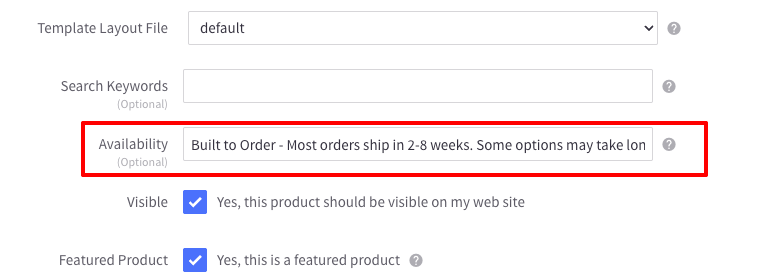

Product Page
The product page displays the information about the product. It includes the product name, description, price, options, and an image of the product.
Most of the product page is built with the default BigCommerce settings, for more information regarding how to add a product in Bigcommerce with the V2 settings, refer to this documentation.
There are some parts on the product page that need to follow specific guidelines.
Short Description
The short description is a brief description of the product. It should be a short paragraph that describes the product in a few sentences. The short description should be displayed at the top of the product page. It is not mandatory, so not all the products will have it. It is managed inside the Advanced Metafields app, in the Products & Variants, under Catalog List.

'More Info' in product picklist accordion

The product picklist is an accordion that allows the user to select different options for the product. To display the 'More info' button in the accordion, we need to add the information in the Metafields as well. This is set in the Channels metafields, under Catalog List.
 It's important to enter the correct name under the Option Name field, which can be copied from the site itself or from the backend.
It's important to enter the correct name under the Option Name field, which can be copied from the site itself or from the backend.
'Other' option with input field
The 'Other' option with an input field is a custom option that allows the user to enter a custom value for the option when selecting 'Other'. To add the 'Other' option with an input field, we need to have an input text with the same name as the 'Other' option from the previous set of options.
Product tabs

The product tabs are used to display additional information about the product. The tabs include the description, specifications, shipping info, and FAQ. The content comes from the product description, following a specific format, like the one already set in some of the current products. The format should be as follows:
- It uses horizontal lines to separate the sections, however, it will not create one tab for each horizontal line
- The section above the first horizontal line will be the description tab
- The sections between the first and the last horizontal line will be the specifications tab
- The section below the last horizontal line will be the FAQ tab
- The shipping info comes from the 'Availability text' field in the product settings.

Similar Items
The similar items section displays products that are similar to the current product and they can be added all at once by clicking on the button. Note that this is not the Related Items. The products are set using metafields and they must be simple products (with no variants or modifiers). In the Advanced Metafields app, go to the Products & Variants section, under Catalog List. Under 'Similar Products', enter the id of the products you would like to display.
You can get the product id from the url of the product in the backend
Related Items
The related items section displays products that are related to the current product. These are usually automatically picked by BigCommerce or can be set manually in the product settings. Please refer to the BigCommerce documentation for more details.